Power BI Pimp Script
A C# script for Tabular Editor that automated common data model tasks — calendar tables, measure tables, calculation groups, time intelligence. The first attempt at codifying best practices into one-click actions.
The Power BI Fixer is a free, open-source development environment for Power BI reports and semantic models — running entirely inside a Microsoft Fabric Notebook.
A complete Power BI development environment — from model exploration and report fixing to memory analysis and AI preparation.
One-click scan & fix across all categories — report fixers, model fixers, Model BPA, and Report BPA. Grouped results with selective execution.
Browse tables, columns, measures, hierarchies, and relationships. Edit DAX, properties, and display folders. Create measures, calculated columns, and tables.
Navigate report pages & visuals with live preview. Scan for violations, fix chart formatting, convert to PBIR, and align visuals.
Create, edit, and delete model perspectives with tri-state checkboxes. Visual table-level summaries with one-click save.
Manage metadata translations across all model objects. One-click auto-translate via Azure AI Translator — no API key needed.
Vertipaq statistics broken down by tables, columns, partitions, relationships. Color-coded size bars, cardinality, encoding, Direct Lake support.
19 best practice rules across 6 categories with one-click auto-fix. 15 rules have no equivalent auto-fix in any other tool.
Report-level best practice analysis with automatic PBIRLegacy-to-PBIR conversion. Catches unused custom visuals, report-level measures, and more.
Inspect delta table structure — parquet files, row groups, column chunks, and column statistics. Essential for Direct Lake optimization.
Generate report prototypes with page screenshots. Export to Excalidraw & SVG. Auto-detects page navigation and drillthrough paths.
Auto-generated SVG relationship diagram with table boxes, columns, measures, and nearest-edge connection lines.
Version info, credits, and links to the source code and documentation.
45+ automated fixes across three categories. Every fixer supports scan mode — assess without changing anything.
| # | Fixer | What It Does |
|---|---|---|
| 1 | Fix Pie Charts | Replaces pie charts with clustered bar charts |
| 2 | Fix Bar Charts | Removes axis clutter, adds data labels, removes gridlines |
| 3 | Fix Column Charts | Same clean-up applied to column charts |
| 4 | Fix Line Charts | Standardized line chart formatting |
| 5 | Fix All Charts | Unified formatting pass across all chart types |
| 6 | Column → Line | Converts column charts to line charts |
| 7 | Column → Bar (IBCS) | Converts column charts to horizontal bar charts |
| 8 | Fix IBCS Variance | Creates proper IBCS variance visualizations |
| 9 | Fix Page Size | Upgrades default pages to Full HD (1080×1920) |
| 10 | Hide Visual Filters | Hides visual-level filters from consumers |
| 11 | Fix Visual Alignment | Snaps misaligned visuals to consistent positions |
| 12 | Remove Unused Custom Visuals | Cleans up unused custom visual registrations |
| 13 | Disable Show Items No Data | Turns off "Show Items with No Data" |
| 14 | Migrate Report-Level Measures | Moves report-level measures to the semantic model |
| 15 | Convert to PBIR | Upgrades PBIRLegacy to PBIR format |
| # | Fixer | What It Does |
|---|---|---|
| 1 | Discourage Implicit Measures | Prevents implicit measure usage in reports |
| 2 | Add Calendar Table | Calculated calendar with hierarchies + auto-relationship detection |
| 3 | Add Measure Table | Empty calculated table to centralize measures |
| 4 | Add Last Refresh Table | Table with last refresh timestamp measure |
| 5 | Add Units Calc Group | Thousand & Million calculation items |
| 6 | Add TI Calc Group | AC/Y-1/Y-2/Y-3/YTD and variance items |
| 7 | Measures from Columns | Auto-create explicit measures from SummarizeBy |
| 8 | Add PY Measures | PY + ΔPY + ΔPY% for selected measures |
| 9 | Setup Incremental Refresh | Auto date column detection + policy config |
| 10 | Cache Pre-warm | Direct Lake cache warm-up perspective + notebook |
| 11 | Prep for AI | Descriptions, synonyms, linguistic metadata for Copilot |
| # | Rule | Category | Fix Action |
|---|---|---|---|
| 1 | Fix Floating Point Types | 🔢 Data Types | Double → Decimal |
| 2 | Fix IsAvailableInMDX (False) | 📡 MDX | Set False on non-attribute columns |
| 3 | Fix IsAvailableInMDX (True) | 📡 MDX | Set True on key/hierarchy columns |
| 4 | Fix Measure Descriptions | 📝 Docs | Description = DAX expression |
| 5 | Fix Date Column Format | 📊 Format | mm/dd/yyyy format string |
| 6 | Fix Month Column Format | 📊 Format | MMMM yyyy format string |
| 7 | Fix Measure Format | 📊 Format | #,0 for unformatted measures |
| 8 | Fix Percentage Format | 📊 Format | #,0.0% for percentage measures |
| 9 | Fix Whole Number Format | 📊 Format | #,0 for integer measures |
| 10 | Fix Flag Column Format | 📊 Format | Yes/No format on boolean columns |
| 11 | Fix Sort Month Column | 📊 Format | SortByColumn on month name columns |
| 12 | Fix Data Category | 📊 Format | DataCategory by naming convention |
| 13 | Fix DIVIDE Function | 📊 Format | Replace / with DIVIDE() |
| 14 | Fix Avoid Adding 0 | 📊 Format | Remove 0+ prefix from DAX |
| 15 | Hide Foreign Keys | 🔗 Schema | IsHidden = True |
| 16 | Fix Do Not Summarize | 🔗 Schema | SummarizeBy = None |
| 17 | Mark Primary Keys | 🔗 Schema | IsKey = True on key columns |
| 18 | Trim Object Names | 🏷 Naming | Remove leading/trailing whitespace |
| 19 | Capitalize Object Names | 🏷 Naming | Capitalize first letter |
Power BI Desktop is the gold standard — and it always will be. The Fixer doesn't try to replace it. It fills the gaps where Desktop can't go, and automates the tedious work you'd rather not do by hand.
Load multiple reports across different semantic models in one session. Run fixers across all of them at once — something Desktop simply can't do. Scan ten reports, fix formatting inconsistencies, and move on.
Not possible in DesktopOne click. Every pie chart in your report becomes a horizontal bar chart. No manual re-wiring of fields, no page-by-page hunting.
AutomationSelect your visuals, and the Fixer does the rest: creates a calendar table, detects and builds the date relationship, generates PY measures, adds error bar measures, and applies IBCS variance formatting. A workflow that takes 30+ minutes by hand, done in seconds.
AutomationConvert vertical column charts to horizontal bar charts. Sounds simple — but Desktop has no "change orientation" button. The Fixer rewrites the visual JSON to make it happen.
AutomationScan multiple reports at once for BPA violations, formatting issues, and anti-patterns. Get a unified view — not one report at a time, but your entire workspace picture.
Not possible in DesktopScreenshots of every report page, navigation paths detected, exported to Excalidraw or SVG. The first time you truly see a report as a whole — not page by page, but the complete picture on one canvas.
Not possible in DesktopMost BPA tools tell you what's wrong. This one also fixes it. Auto-format dates, hide foreign keys, fix DIVIDE(), capitalize names, set SortByColumn on month columns — 15 of these auto-fixers have no equivalent in any other tool.
Unique to PBI FixerSome things are simply outside Desktop's scope — and that's where the Fixer adds unique value:
⚠️ Fair warning: The PBI Fixer is still early-stage and very much beta. It won't replace your desktop workflow — it extends it. Expect rough edges, and definitely test on a non-production workspace first. Contributions and feedback are welcome.
A visual tour through the key tabs and features.
Navigate your entire report structure — pages, visuals, properties — with a live embedded preview. Scan for issues or fix them in one click.
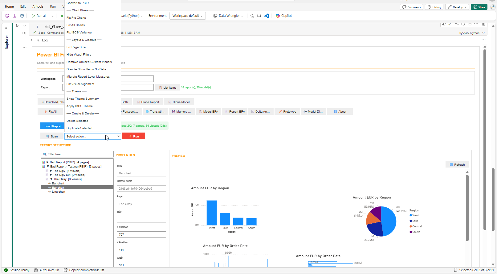
Your semantic model workbench. Browse, edit, and enhance — tables, measures, DAX, relationships, all in one place.
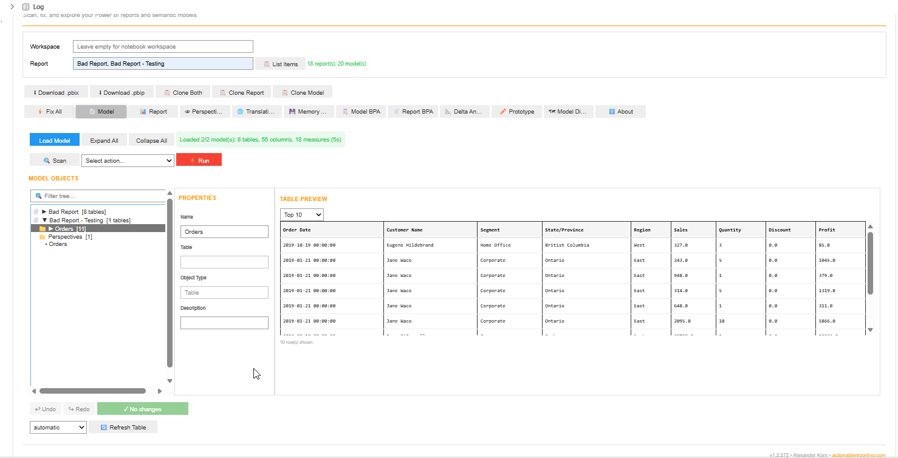
19 best practice rules with one-click auto-fix. Most rules have no equivalent auto-fix anywhere else.
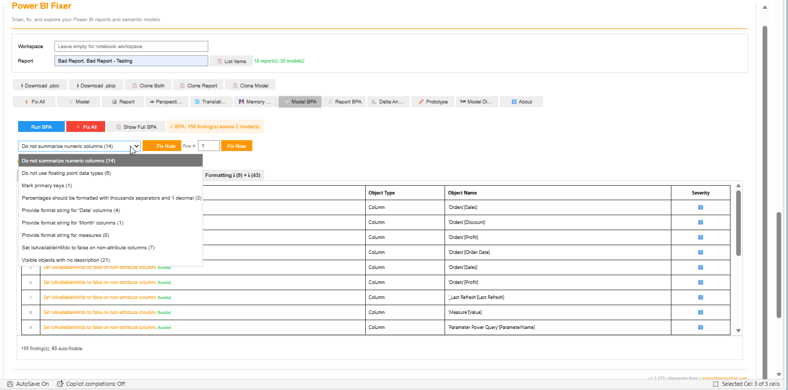
Vertipaq statistics at your fingertips — column-level memory breakdown with color-coded bars.
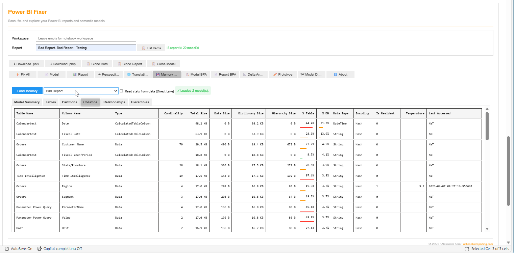
Multi-language metadata management with one-click AI auto-translate. No API keys, no cost.
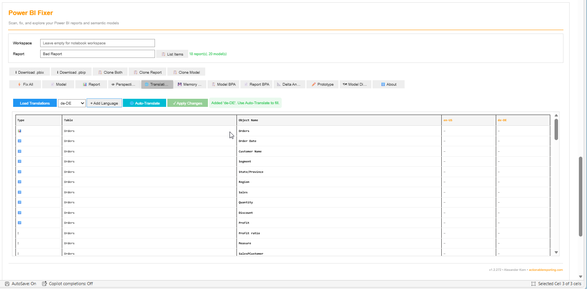
Visual perspective management with tri-state checkboxes. Create, modify, and delete perspectives with ease.
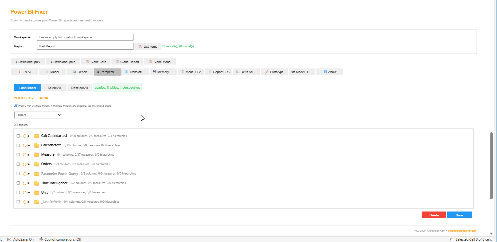
International Business Communication Standards built right in — proper variance charts, clean formatting, and IBCS themes.
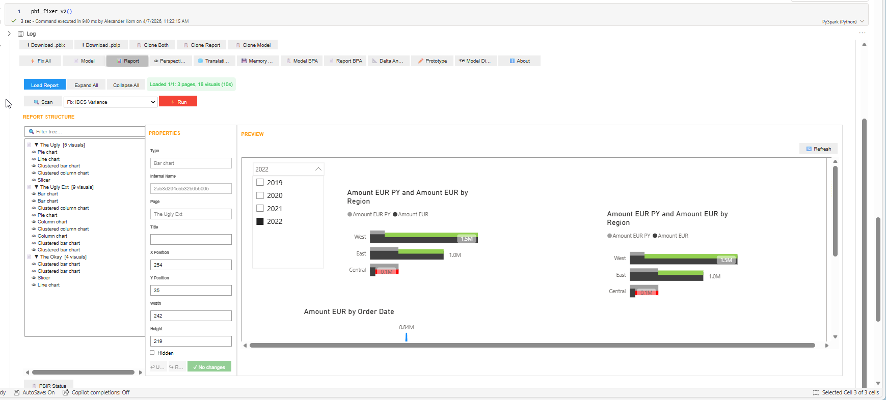
Auto-generated SVG diagram of your data model — tables, columns, measures, and relationships at a glance.
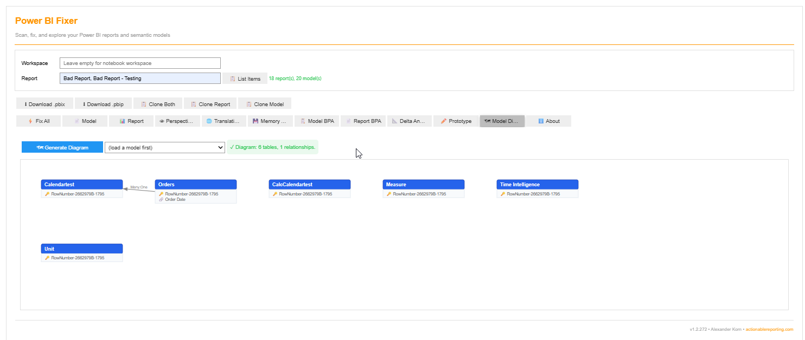
Capture every report page as a screenshot. Export to Excalidraw for whiteboarding or SVG for documentation.
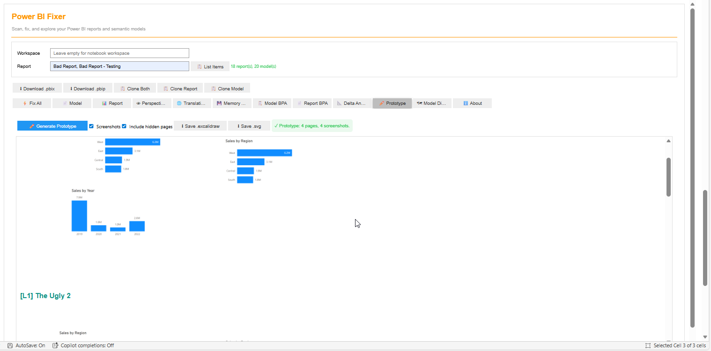
Inspect your lakehouse delta tables — parquet files, row groups, column chunks. Essential for Direct Lake optimization.
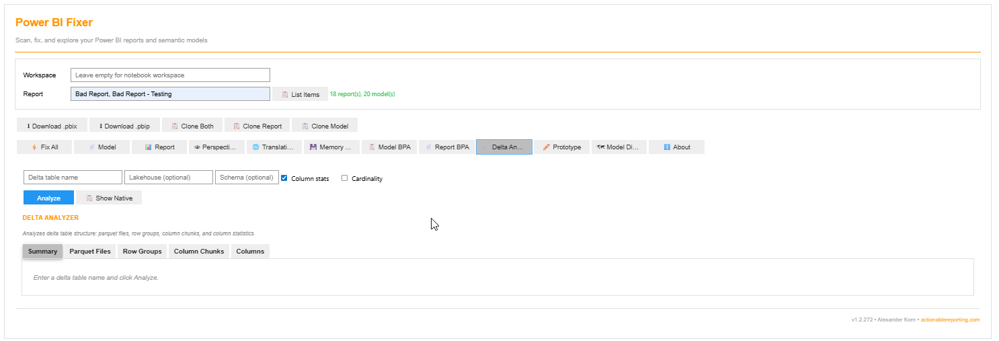
Report-level best practice analysis — catches issues at the visual and page level that model-only BPA can't detect.
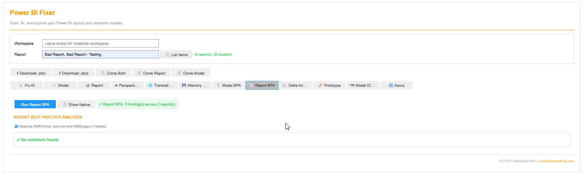
Every fixer is a standalone Python function. Call them directly in your own notebooks, scripts, or pipelines — no UI required.
⏳ Heads up: Direct sempy_labs imports for the fixer functions are not yet available in the public API. This is currently pending development and will be released soon. See Quick Start below for how to install and test today via the PBI Fixer UI.
Every function accepts scan_only=True to preview changes without applying them.
| Function | Module | What It Does |
|---|---|---|
fix_piecharts() | report._Fix_PieChart | Replace pie charts with bar charts |
fix_charts() | report._Fix_Charts | Unified formatting across all chart types |
fix_barcharts() | report._Fix_Charts | Clean up bar chart formatting |
fix_columncharts() | report._Fix_Charts | Clean up column chart formatting |
fix_linecharts() | report._Fix_Charts | Clean up line chart formatting |
fix_column_to_bar() | report._Fix_Charts | Column → horizontal bar (IBCS orientation) |
fix_bar_to_column() | report._Fix_Charts | Bar → vertical column |
fix_column_to_line() | report._Fix_ColumnToLine | Column → line chart |
fix_ibcs_variance() | report._Fix_IBCSVariance | Full IBCS variance (calendar + PY + error bars) |
fix_page_size() | report._Fix_PageSize | Default → Full HD (1920×1080) |
fix_hide_visual_filters() | report._Fix_HideVisualFilters | Hide visual-level filter panes |
fix_visual_alignment() | report._Fix_VisualAlignment | Snap misaligned visuals to grid |
fix_disable_show_items_no_data() | report._Fix_DisableShowItemsNoData | Turn off "Show Items with No Data" |
fix_remove_unused_custom_visuals() | report._Fix_RemoveUnusedCustomVisuals | Remove unreferenced custom visuals |
fix_migrate_report_level_measures() | report._Fix_MigrateReportLevelMeasures | Move report measures to the model |
fix_migrate_slicer_to_slicerbar() | report._Fix_MigrateSlicerToSlicerbar | Convert slicers to slicer bar |
fix_upgrade_to_pbir() | report._Fix_UpgradeToPbir | PBIRLegacy → PBIR conversion |
| Function | Module | What It Does |
|---|---|---|
fix_discourage_implicit_measures() | semantic_model._Fix_DiscourageImplicitMeasures | Discourage implicit measures |
add_calculated_calendar() | semantic_model._Add_CalculatedTable_Calendar | Calendar table + hierarchies |
add_measure_table() | semantic_model._Add_CalculatedTable_MeasureTable | Empty measure table |
add_last_refresh_table() | semantic_model._Add_Table_LastRefresh | Last refresh timestamp table |
add_calc_group_units() | semantic_model._Add_CalcGroup_Units | K / M calculation items |
add_calc_group_time_intelligence() | semantic_model._Add_CalcGroup_TimeIntelligence | AC / Y-1 / YTD / variance items |
add_measures_from_columns() | semantic_model._Add_MeasuresFromColumns | Explicit measures from SummarizeBy |
add_py_measures() | semantic_model._Add_PYMeasures | PY + ΔPY + ΔPY% for measures |
setup_incremental_refresh() | semantic_model._Setup_IncrementalRefresh | Date detection + policy config |
setup_cache_warming() | semantic_model._Setup_CacheWarming | Direct Lake warm-up perspective |
prep_for_ai() | semantic_model._Prep_ForAI | Descriptions + synonyms for Copilot |
| Function | Module | Category |
|---|---|---|
fix_floating_point_datatype() | semantic_model._Fix_FloatingPointDataType | 🔢 Data Types |
fix_isavailable_in_mdx() | semantic_model._Fix_IsAvailableInMdx | 📡 MDX |
fix_isavailable_in_mdx_true() | semantic_model._Fix_IsAvailableInMdxTrue | 📡 MDX |
fix_measure_descriptions() | semantic_model._Fix_MeasureDescriptions | 📝 Documentation |
fix_date_column_format() | semantic_model._Fix_DateColumnFormat | 📊 Formatting |
fix_month_column_format() | semantic_model._Fix_MonthColumnFormat | 📊 Formatting |
fix_measure_format() | semantic_model._Fix_MeasureFormat | 📊 Formatting |
fix_percentage_format() | semantic_model._Fix_PercentageFormat | 📊 Formatting |
fix_whole_number_format() | semantic_model._Fix_WholeNumberFormat | 📊 Formatting |
fix_flag_column_format() | semantic_model._Fix_FlagColumnFormat | 📊 Formatting |
fix_sort_month_column() | semantic_model._Fix_SortMonthColumn | 📊 Formatting |
fix_data_category() | semantic_model._Fix_DataCategory | 📊 Formatting |
fix_use_divide_function() | semantic_model._Fix_UseDivideFunction | 📊 Formatting |
fix_hide_foreign_keys() | semantic_model._Fix_HideForeignKeys | 🔗 Schema |
fix_do_not_summarize() | semantic_model._Fix_DoNotSummarize | 🔗 Schema |
fix_mark_primary_keys() | semantic_model._Fix_MarkPrimaryKeys | 🔗 Schema |
fix_capitalize_object_names() | semantic_model._Fix_CapitalizeObjectNames | 🏷 Naming |
fix_trim_object_names() | semantic_model._Fix_TrimObjectNames | 🏷 Naming |
Every fixer is a single function call with a predictable signature. That makes them ideal building blocks for AI agents, CLI tools, and automated pipelines.
Imagine telling an AI agent: "Fix all pie charts and apply IBCS variance to my Sales report." Because each fixer is a clean Python function with self-documenting parameters, an LLM can generate the right call without custom tooling.
Tools like the Fabric CLI or MCP servers could use these functions as skills. Chain a scan across 20 reports, identify issues, and auto-fix — all from a terminal or an AI-powered copilot session.
Every function supports scan_only=True. This means AI agents can safely assess a report without changing anything — then present findings to a human for approval before applying fixes. Perfect for governed environments.
Fixers are independent, stateless functions. Chain them, loop them, filter them. Build your own "Power BI quality scanner" in 20 lines of Python. Each function handles its own XMLA connection and PBIR parsing — no shared state, no side effects between calls.
Today, you click "Fix All" in the UI. Tomorrow, an AI agent runs fix_piecharts() + fix_hide_foreign_keys() + fix_page_size() as part of a deployment pipeline — and you review the diff before it goes live. The functions are the same. The caller changes.
The PBI Fixer didn't start as a Fabric notebook tool. It evolved through four generations of Power BI automation — each one building on the lessons of the last.
A C# script for Tabular Editor that automated common data model tasks — calendar tables, measure tables, calculation groups, time intelligence. The first attempt at codifying best practices into one-click actions.
80+ Tabular Editor macros organized into categories — measure creation, calc groups, model documentation, formatting. The Pimp Script's ideas, expanded into a full library with Stream Deck shortcuts.
The jump to workspace-wide automation. A PowerShell script that downloaded all reports, replaced pie charts, applied themes, fixed page sizes, and re-uploaded — touching both the report layer and the semantic model. 9 fixers, Windows dialogs, local execution.
Everything moved to the cloud. A full interactive UI running natively in Fabric Notebooks — 45+ fixers, 12 tabs, scan mode, multi-report editing, BPA auto-fix, and zero local installs. One line: pbi_fixer()
Video walkthroughs and demos of the Power BI Fixer v2.
No config files. No environment variables. No API keys. Just works.
In a Microsoft Fabric Notebook cell, run:
%pip install git+https://github.com/KornAlexander/semantic-link-labs.git@feature/pbi-fixer-ui
In the next cell, run:
from sempy_labs import pbi_fixer
pbi_fixer()
Type your workspace and report name, select your fixers, and click Run. That's it.
F or P capacity workspace
Read/write for model operations
For report fixes (auto-convert available)
"Export reports as image files" for screenshots
Built on the shoulders of an incredible community.
By Michael Kovalsky — TOM connectivity, Model BPA, Report BPA, Vertipaq Analyzer, ReportWrapper, Perspective Editor, DAX utilities, Direct Lake support.
DAX Formatter API — clean DAX formatting for all model expressions.
Prep for AI — API discovery for automatic Copilot readiness preparation.
ipywidgets, powerbiclient, SynapseML (Azure AI Translator), Microsoft Fabric Notebooks.